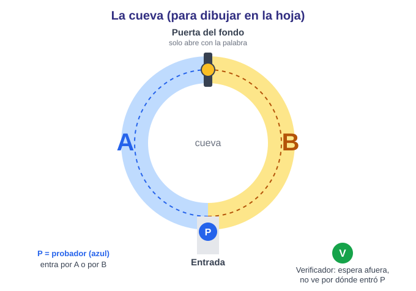
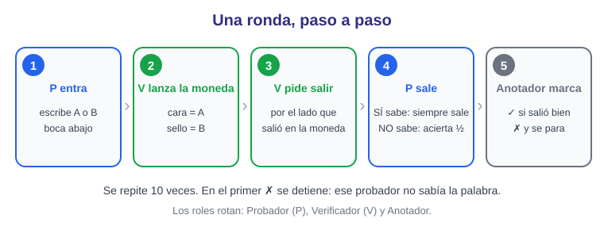
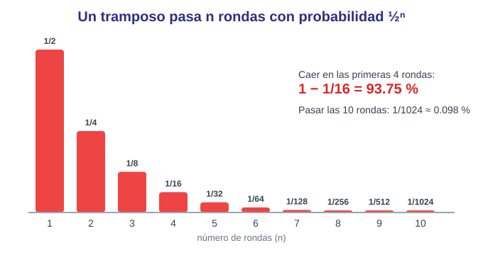
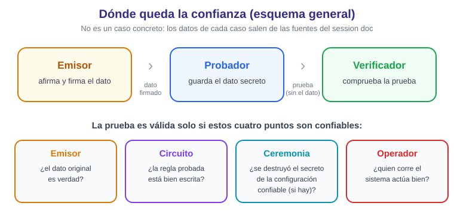

Resumen del laboratorio
El laboratorio tiene dos partes. En la Parte A se simula con una moneda la cueva de las pruebas de conocimiento cero: un probador que sabe un secreto sale siempre por donde le piden, y uno que no lo sabe solo acierta la mitad de las veces, así que repetir los retos vuelve casi imposible hacer trampa. En la Parte B se analiza un caso real de ZKP: qué prueba, qué esconde, quién verifica y qué confianza queda.
Estado: el lab se hace en clase, con papel y una moneda, y lo que se entrega es una foto de las tablas llenas a mano. Está lista la preparación (plantilla y hoja de referencia); la cueva, la ficha del caso asignado y las fotos aparecen como pendientes porque ocurren en clase.
Estado de actividades
Diagramas
1. La cueva (para dibujar en la hoja)
Un anillo con dos caminos A y B y una puerta al fondo que solo abre con la palabra. El probador (P) entra por A o por B; el verificador (V) espera afuera y no ve por dónde entró.

2. Una ronda, paso a paso

3. La probabilidad de hacer trampa

4. Dónde queda la confianza (esquema general)
Esquema general, no de un caso concreto. Los datos de cada caso salen de las fuentes del session doc.

La probabilidad de hacer trampa: ½ⁿ
Un tramposo que no sabe la palabra pasa cada ronda con probabilidad ½. Para pasar n rondas seguidas es ½ⁿ:
| Rondas (n) | Pasar las n rondas | En % | Caer antes o en la ronda n |
|---|---|---|---|
| 1 | 1/2 | 50 % | 50 % |
| 2 | 1/4 | 25 % | 75 % |
| 3 | 1/8 | 12.5 % | 87.5 % |
| 4 | 1/16 | 6.25 % | 93.75 % |
| 5 | 1/32 | 3.125 % | 96.875 % |
| 10 | 1/1024 | 0.098 % | 99.902 % |
El verificador no oye la palabra: se convence por la probabilidad, no por el dato. Tabla completa en REFERENCIA.md.
Qué se entrega
- Foto de la tabla de rondas (Parte A) y de la ficha de caso (Parte B), llenas a mano y sin nada más en la foto.
- La ficha de 7 filas: qué se prueba, dato secreto, probador y verificador, qué ve el verificador, tipo de prueba (interactiva o no, SNARK o STARK, configuración confiable), qué confianza queda y una fuente.
- Una reflexión de 3 líneas.
Plantilla: PLANTILLA.md · Guía: README.md.
Reglas del lab
- Sin computadoras, código, apps ni instalaciones: todo es papel.
- Cero datos personales reales.
- No se inventan datos del caso: lo que no esté en las fuentes se escribe "no verificado".
- No se citan leyes extranjeras como si fueran guatemaltecas.